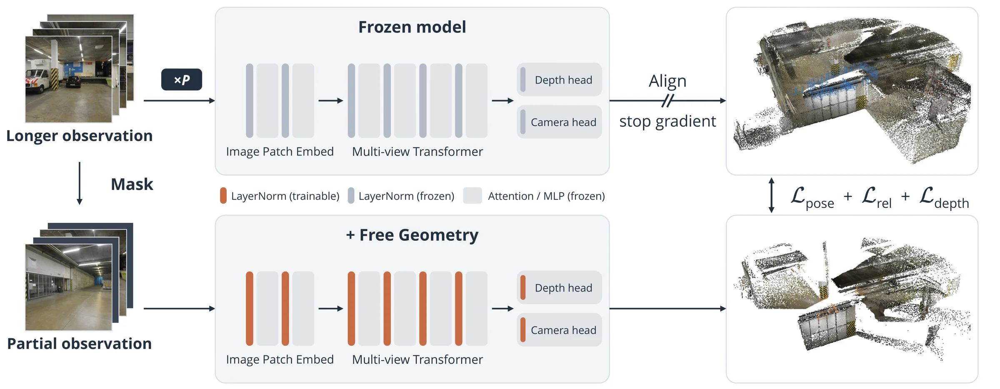
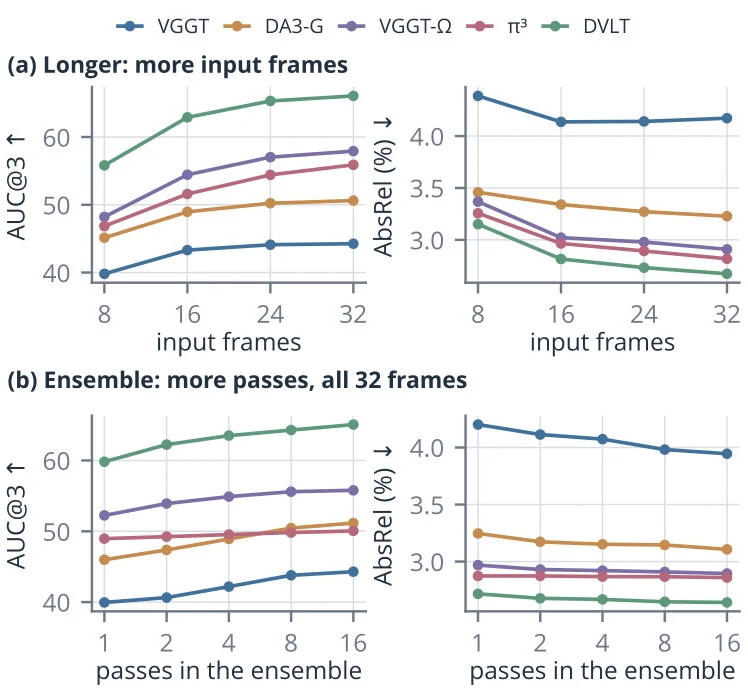
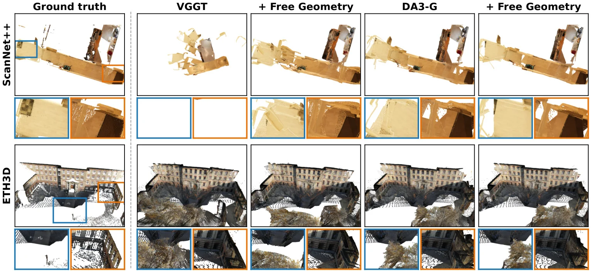
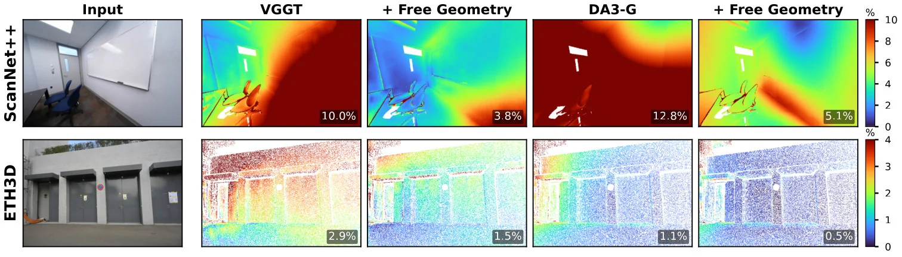
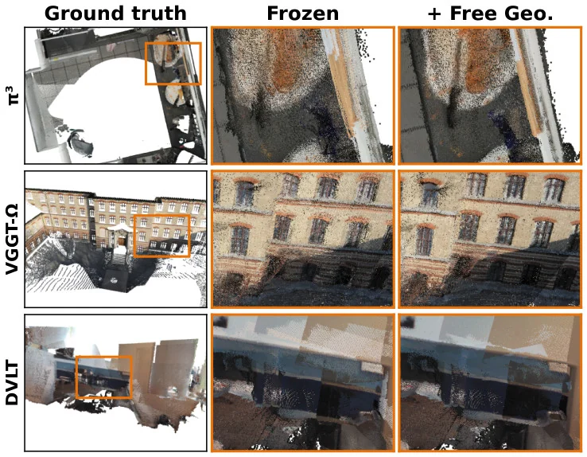
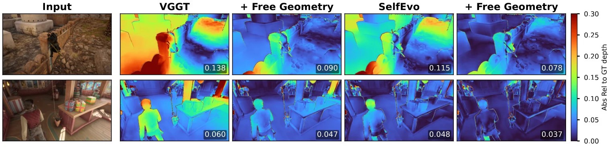
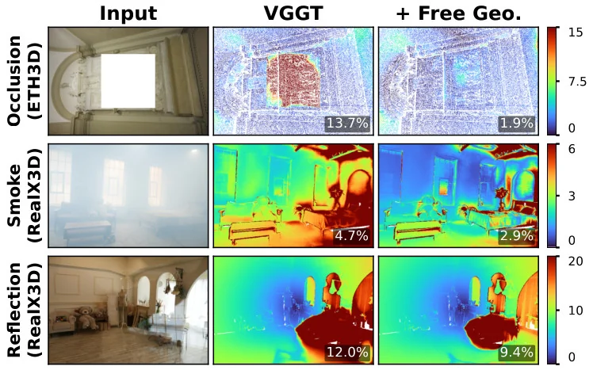

- All N frames
- 16 frozen passes
- Consensus teacher
- Masked views, M = N/2
- Norm layers only
- Pose + depth losses
Feed-forward 3D reconstruction models are efficient but rigid: once trained, they run zero-shot and cannot adapt to the test scene. As a result, plausible-looking reconstructions often contain errors under domain shifts, occlusions, specularities and ambiguous cues. To address this, we introduce Free Geometry, a framework that enables feed-forward 3D reconstruction models to self-evolve at test time without any 3D ground truth or offline retraining. Our key insight is that a model can become its own teacher at test time. When given more views, the model produces more geometrically consistent reconstructions. Aggregating multiple such predictions across different reference frames and view subsets further improves their accuracy and reliability, forming a stronger consensus teacher. Leveraging this property, given a test sequence, we mask different subsets of it to construct multiple partial observations. Free Geometry then adapts the model by enforcing camera pose and depth consistency between these partial-view predictions and the teacher's consensus. By updating only the normalization layers, this self-supervision enables fast scene-specific adaptation in about two minutes on a single GPU. Our approach improves five state-of-the-art foundation models on four datasets, yielding average relative gains of in camera pose accuracy (AUC@3) and in point map accuracy (inlier ratio).






